集群模式 #
- Redis 集群是 Redis 提供的分布式数据库方案，集群通过分片来进行数据共享，并提供复制和故障转移功能。
- 下面将对集群的节点、槽指派、命令执行、转向、故障转移、消息等各个方面进行介绍。
1 节点 #
-
一个 Redis 集群通常由多个节点组成，在刚开始的时候，每个节点都是相互独立的，他们都处于一个只包含自己的集群当中，要组建一个真正可工作的集群，我们必须将各个独立的节点连接起来，构成一个包含多个节点的集群。
-
连接各个节点的工作可以使用
CLUSTER MEET命令来完成，该命令的格式如下：CLUSTER MEET <ip> <port>向一个节点
node发送CLUSTER MEET命令，可以让node节点与ip和port所指定的节点进行握手，当握手成功时，node节点就会将ip和port所指定的节点添加到node节点所在的集群中。 -
具体实例如下：
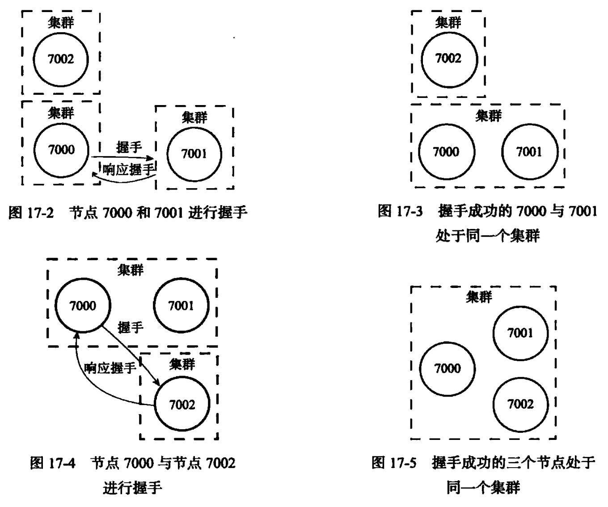
1.1 启动节点 #
-
一个节点就是一个运行在集群模式下的 Redis 服务器，Redis 服务器在启动时会根据
cluster_enabled配置选项是否为yes来决定是否开启服务器的集群模式，如下图所示：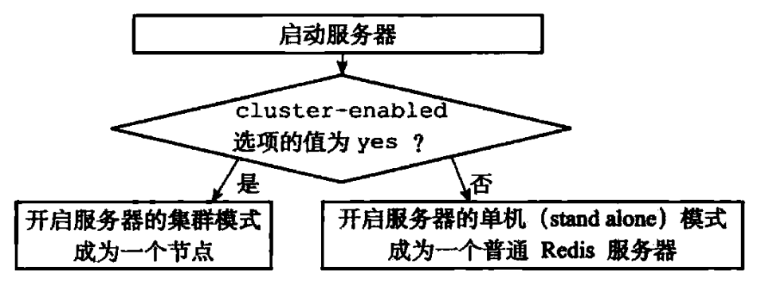
-
节点（运行在集群模式下的 Redis 服务器）会继续使用所有在单机模式中使用的服务器组件，比如说：
- 节点会继续使用 文件事件处理器来处理命令请求和返回命令回复。
- 节点会继续使用
时间事件处理器来执行
serverCron函数，而serverCron函数又会调用集群模式特有的clusterCron函数，clusterCron函数负责执行在集群模式下需要执行的常规操作，例如向集群中的其他节点发送 Gossip 消息，检查节点是否断线，或者检查是否需要对下线节点进行自动故障转移等。 - 节点会继续使用数据库来保存键值对数据，键值对依然会是各种不同类型的对象。
- 节点会继续使用 RDB 持久化模块和 AOF 持久化模块来执行持久化工作。
- 节点会继续使用发布于订阅模块来执行
PUBLISH、SUBSCRIBE等命令。 - 节点会继续使用
Lua脚本环境来执行客户端输入的Lua脚本。
-
除此之外，节点会继续使用
redisServer结构来保存服务器的状态，使用redisClient结构来保存客户端的状态，至于那些只有在集群模式下才会用到的数据，节点将他们保存到了cluster.h/clusterNode结构、cluster.h/clusterLink结构，以及cluster.h/clusterState结构里面。
1.2 集群数据结构 #
-
clusterNode结构保存了一个节点的当前状态，比如节点的创建时间、节点的名字、节点当前的配置纪元、节点的 IP 地址和端口号等等。 -
每个节点都会使用一个
clusterNode结构来记录自己的状态，并为集群中的所有其他节点（包括主节点和从节点）都创建一个相应的clusterNode结构，以此来记录其他节点的状态：typedef struct clusterNode { // 创建节点的时间 mstime_t ctime; // 节点的名字，由 40 个十六进制字符组成 char name[REDIS_CLUSTER_NAMELEN]; // 节点标识，使用各种不同的标识值记录节点的角色（比如主节点或者从节点），以及节点目前所处的状态（比如在线或者下线） int flags; // 获取当前的配置纪元，用于实现故障转移 uint64_t configEpoch; // 节点的 IP 地址 char ip[REDIS_IP_STR_LEN]; // 节点的端口号 int port; // 保存连接节点所需的相关信息 clusterLink *link; } clusterNode; -
clusterNode结构的link属性是一个clusterLink结构，该结构保存了连接节点所需的相关信息，比如套接字描述符、输入缓冲区和输出缓冲区：typedef struct clusterLink { // 连接的创建时间 mstime_t ctime; // TCP 套接字描述符 int fd; // 输出缓冲区，保存着等待发送给其他节点的消息 sds sndbuf; // 输入缓冲区，保存着从其他节点接收到的消息 sds rcvbuf; // 与这个连接相关联的节点，如果没有的话就为 NULL struct clusterNode *node; } clusterLink; -
最后，每个节点都保存着一个
clusterState结构，这个结构记录了在当前节点的视角下，集群目前所处的状态，例如集群是在线还是下线、集群包含多少个节点、集群当前的配置纪元等：typedef struct clusterState { // 指向当前节点的指针 clusterNode *myself; // 集群当前的配置纪元，用于实现故障转移 uint64_t currentEpoch; // 集群当前的状态（在线还是下线） int state; // 集群中至少处理着一个槽的节点的数量 int size; // 集群节点名单（包括 myself 节点），字典的键为节点的名字，字典的值为节点对应的 clusterNode 结构 dict *nodes; } clusterState; -
具体的实例如下：
-
以前面介绍的 7000、7001、7002 三个节点为例，下图展示了节点 7000 创建的
clusterState结构，这个结构从节点 7000 的角度记录了集群以及集群包含的额三个节点的当前状态（为了空间考虑，图中省略了clusterNode结构的一部分属性）：-
结构的
currentEpoch属性的值为 0，表示集群当前的配置纪元为 0。 -
结构的
size属性的值为 0，表示集群目前没有任何节点在处理槽，因此结构的state属性的值为REDIS_CLUSTER_FAIL，这表示集群目前处于下线状态。 -
结构的
nodes字典记录了集群目前包含的三个节点，这三个节点分别由三个clusterNode结构表示，其中myself指针指向代表节点 7000 的clusterNode结构，而字典中的另外两个指针则分别指向代表结点 7001 和代表节点 7002 的clusterNode结构，这两个节点是节点 7000 已知的在集群中的其他节点。 -
三个节点的
clusterNode结构的flags属性都是REDIS_NODE_MASTER，说明三个节点都是主节点。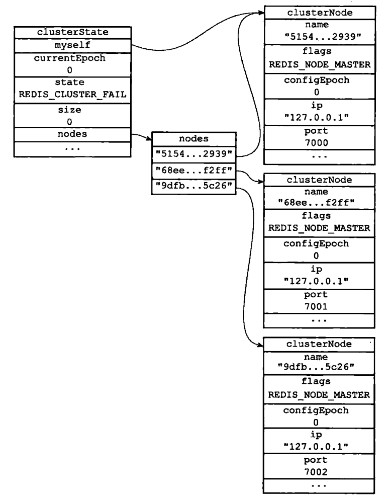
-
-
节点 7001 和节点 7002 也会创建类似的
clusterState结构：- 不过在节点 7001 创建的
clusterState结构中，myself指针将指向代表结点 7001 的clusterNode结构，而节点 7000 和节点 7002 则是集群中的其他节点。 - 而在节点 7002 创建的
clusterState结构中，myself指针将指向代表结点 7002 的clusterNode结构，而节点 7000 和节点 7001 则是集群中的其他节点。
- 不过在节点 7001 创建的
-
1.3 CLUSTER MEET 命令的实现 #
- 通过向节点 A 发送
CLUSTER MEET命令，客户端可以让接收命令的节点 A 将另一个节点 B 添加到节点 A 当前所在的集群里面。 - 收到命令的节点 A 将与节点 B 进行握手，以此来确认彼此的存在，并未将来的进一步通信打好基础：
-
节点 A 会为节点 B 创建一个
clusterNode结构，并将该结构添加到自己的clusterState.nodes字典里面。 -
之后，节点 A 将根据
CLUSTER MEET命令给定的 IP 地址和端口号，向节点 B 发送一条MEET消息。 -
如果一切顺利，节点 B 将接收到节点 A 发送的
MEET消息，并为节点 A 创建一个clusterNode结构，并将该结构添加到自己的clusterState.nodes字典里面。 -
之后，节点 B 将向节点 A 返回一条
PONG消息。 -
如果一切顺利，节点 B 将接收到节点 A 返回的
PING消息，通过这条PING消息，节点 B 就可以知道节点 A 已经成功地接收到了自己返回的PONG消息，握手完成。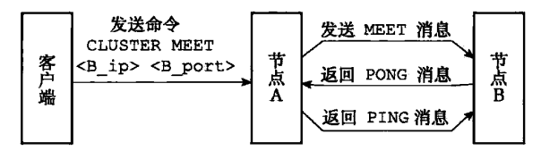
-
- 之后，节点 A 会将节点 B 的信息通过 Gossip 协议传播给集群中的其他节点，让其他节点也与节点 B 进行握手，最终，经过一段时间之后，节点 B 会被集群中的所有节点认识。
2 槽指派 #
- Redis 集群通过分片的方式来保存数据库中的键值对，集群的整个数据库被分为 16384 个槽，数据库中的每个键都属于这 16384 个槽的其中一个，集群中的每个节点可以处理 0 个或最多 16384 个槽。
- 当数据库中的 16384 个槽都有节点在处理时，集群处于上线状态，相反地，如果数据库中有任何一个槽没有得到处理，那么集群处于下线状态。
- 具体实例如下：
-
上面我们使用
CLUSTER MEET命令将 7000、7001、7002 三个节点连接到了同一个集群里面，不过这个集群目前仍处于下线状态，因为集群中的三个节点都没有在处理任何槽：
-
通过向节点发送
CLUSTER ADDSLOTS命令，我们可以将一个或多个槽指派给节点负责：CLUSTER ADDSLOTS <slot> [slot ...] -
例如，我们可以执行以下命令将槽 0 至 500 指派给节点 7000 负责：
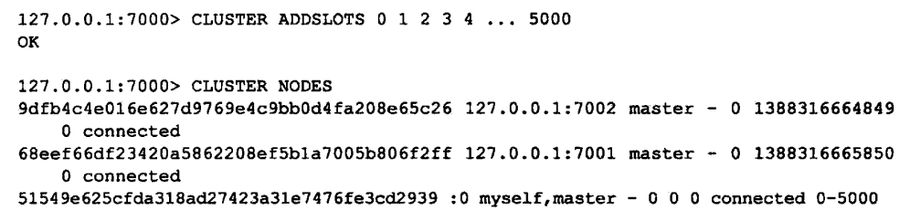
-
为了让 7000、7001、7002 三个节点所在的集群进入上线状态，我们继续执行以下命令，将槽 5001 至槽 10000 指派给节点 7001 负责：
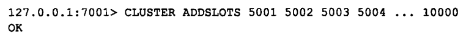
-
然后将槽 10001 至槽 16383 指派给 7002 负责：

-
当以上三个
CLUSTER ADDSLOTS命令都执行完毕之后，数据库中的 16384 个槽都已经被指派给了相应的节点，集群进入上线状态：
-
2.1 记录节点的槽指派信息 #
-
clusterNode结构的slots属性和numslot属性记录了节点负责处理哪些槽：typedef struct clusterNode { // ... unsigned char slots[REDIS_CLUSTER_SLOTS/8]; /* slots handled by this node */ int numslots; /* Number of slots handled by this node */ // ... } clusterNode; -
slots属性是一个二进制位数组，这个数组的长度为 16384 / 8 = 2048 个字节，共包含 16384 个二进制位。 -
Redis以 0 为起始索引，16383 为终止索引，对
slots数组中的 16384 个二进制位进行编号，并根据索引i上的二进制位的值来判断节点是否负责处理槽i：- 如果
slots数组在索引i上的二进制位的值为 1，那么表示节点负责处理槽i。 - 如果
slots数组在索引i上的二进制位的值为 0，那么表示节点不负责处理槽i。
- 如果
-
因为取出和设置
slots数组中的任意一个二进制位的值的复杂度仅为 $O(1)$，所以对于一个给定节点的slots数组来说，程序检查节点是否负责处理某个槽，又或者将某个槽指派给节点负责，这两个动作的复杂度都是 $O(1)$。 -
至于
numslots属性则记录节点负责处理的槽的数量，也即是slots数组中值为 1 的二进制位的数量。 -
具体实例如下：
-
下图展示了一个
slots数组示例，这个数组索引 0 至索引 7 上的二进制位的值都为 1，其余所有二进制位的值都为 0，这表示节点负责处理槽 0 至槽 7，节点处理的槽数量为 8：
-
下图展示了另一个
slots数组示例，这个数组索引 1、3、5、8、9、10 上的二进制位的值都为 1，而其余所有二进制位的值都为 0，这表示节点负责处理 1、3、5、8、9、10，节点处理的槽数量为 6：
-
2.2 传播节点的槽指派信息 #
- 一个节点除了会将自己负责处理的槽记录在
clusterNode结构的slots属性和numslots属性之外，他还会将自己的slots数组通过消息发送给集群中的其他节点，以此来告知其他节点自己目前负责处理哪些槽。 - 因为集群中的每个节点都会将自己的
slots数组通过消息发送给集群中的其他节点，并且每个接收到slots数组的节点都会将数组保存到相应节点的clusterNode结构里面，因此，集群中的每个节点都会知道数据库中的 16384 个槽分别被指派给了集群中的哪些节点。 - 具体实例如下：
- 对于前面展示的包含 7000、7001、7002 三个节点的集群来说：
-
节点 7000 会通过消息向节点 7001 和节点 7002 发送自己的
slots数组，以此来告知这两个节点，自己负责处理槽 0 至槽 5000。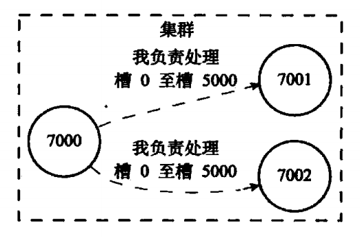
-
节点 7001 会通过消息向节点 7000 和节点 7002 发送自己的
slots数组，以此来告知这两个节点，自己负责处理槽 5001 至槽 10000。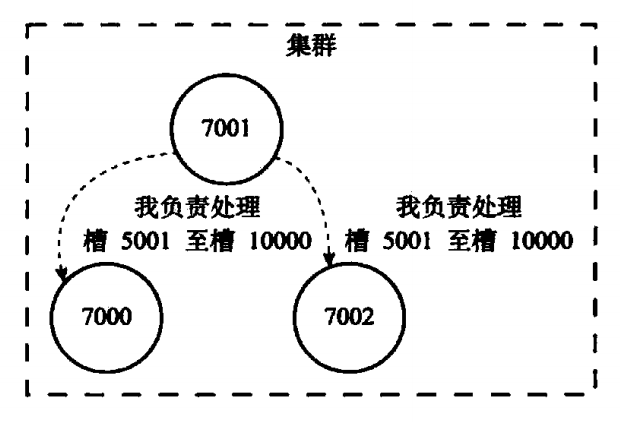
-
节点 7002 会通过消息向节点 7000 和节点 7001 发送自己的
slots数组，以此来告知这两个节点，自己负责处理槽 10001 至槽 16383。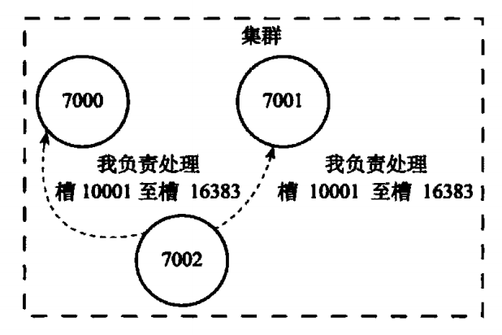
-
当节点 A 通过消息从节点 B 那里接收到节点 B 的
slots数组时，节点 A 会在自己的clusterState.nodes字典中查找节点 B 对应的clusterNode结构，并对结构中的slots数组进行保存或者更新。
-
- 对于前面展示的包含 7000、7001、7002 三个节点的集群来说：
2.3 记录集群所有槽的指派信息 #
-
clusterState结构中的slots数组记录了集群中所有 16384 个槽的指派信息：typedef struct clusterState { // ... clusterNode *slots[REDIS_CLUSTER_SLOTS]; // ... } clusterState; -
slots数组包含 16384 个项，每个数组项都是一个指向clusterNode结构的指针：- 如果
slots[i]指针指向NULL，那么表示槽i尚未指派给任何节点。 - 如果
slots[i]指针指向一个clusterNode结构，那么表示槽i已经指派给了clusterNode结构所代表的节点。
- 如果
-
如果只将槽指派信息保存在各个节点的
clusterNode.slots数组里，会出现一些无法高效解决的问题，而clusterState.slots数组的存在解决了这些问题：- 如果节点只使用
clusterNode.slots数组来记录槽的指派信息，那么为了知道槽i是否已经被指派，或者槽i被指派给了哪个节点，程序需要遍历clusterState.nodes字典中的所有clusterNode结构，检查这些结构的slots数组，直到找到负责处理槽i的节点为止，这个过程的复杂度为 $O(N)$，其中 $N$为clusterState.nodes字典保存的clusterNode结构的数量。 - 而通过将所有槽的指派信息保存在
clusterState.slots数组里面，程序要检查槽i是否已经被指派，又或者取得负责处理槽i的节点，只需要访问clusterState.slots[i]的值即可，这个操作的复杂度仅为 $O(1)$。
- 如果节点只使用
-
要说明的一点是，虽然
clusterState.slots数组记录了集群中所有槽的指派信息，但使用clusterNode结构的slots数组来记录单个节点的槽指派信息仍然是必要的：- 因为当程序需要将某个节点的槽指派信息通过消息发送给其他节点时，程序只需要将相应节点的
clusterNode.slots数组整个发送出去就可以了。 - 另一方面，如果 Redis 不使用
clusterNode.slots数组，而单独使用clusterState.slots数组的话，那么每次要将节点 A 的槽指派信息传播给其他节点时，程序必须先遍历整个clusterState.slots数组，记录节点 A 负责处理哪些槽，然后才能发送节点 A 的槽指派信息，这比直接发送clusterNode.slots数组要麻烦和低效得多。
- 因为当程序需要将某个节点的槽指派信息通过消息发送给其他节点时，程序只需要将相应节点的
-
clusterState.slots数组记录了集群中所有槽的指派信息，而clusterNode.slots数组只记录了clusterNode结构所代表的的节点的槽指派信息，这是两个slots数组的关键区别所在。 -
具体实例如下：
-
例如，对于上面提到的 7000、7001、7002 三个节点来说，他们的
clusterState结构的slots数组将会是下图所示的样子：-
数组项
slots[0]至slots[5000]的指针都指向代表节点 7001 的clusterNode结构，表示槽 0 至 5000 都指派给了节点 7000。 -
数组项
slots[5001]至slots[10000]的指针都指向代表节点 7001 的clusterNode结构，表示槽 5001 至 10000 都指派给了节点 7001。 -
数组项
slots[10001]至slots[16383]的指针都指向代表结点 7002 的clusterNode结构，表示槽 10001 至 16383 都指派给了节点 7002。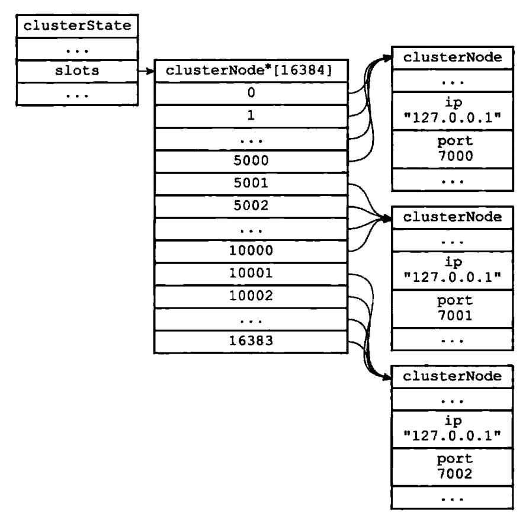
-
-
对于下图所示的
slots数组来说，如果程序需要知道槽 10002 被指派给了哪个节点，那么只要访问数组项slots[10002]，就可以马上知道槽 10002 被指派给了节点 7002：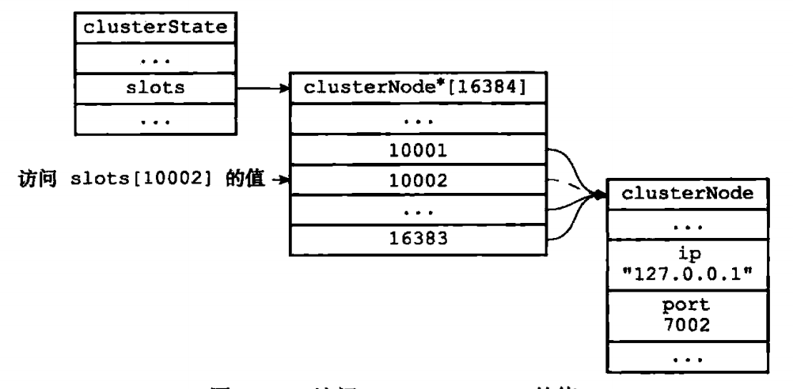
-
2.4 CLUSTER ADDSLOTS 命令的实现 #
-
CLUSTER ADDSLOTS命令接受一个或多个槽作为参数，并将所有输入的槽指派给接收该命令的节点负责：CLUSTER ADDSLOTS <slot> [slot ...] -
CLUSTER ADDSLOTS命令的实现可以用以下伪代码来表示：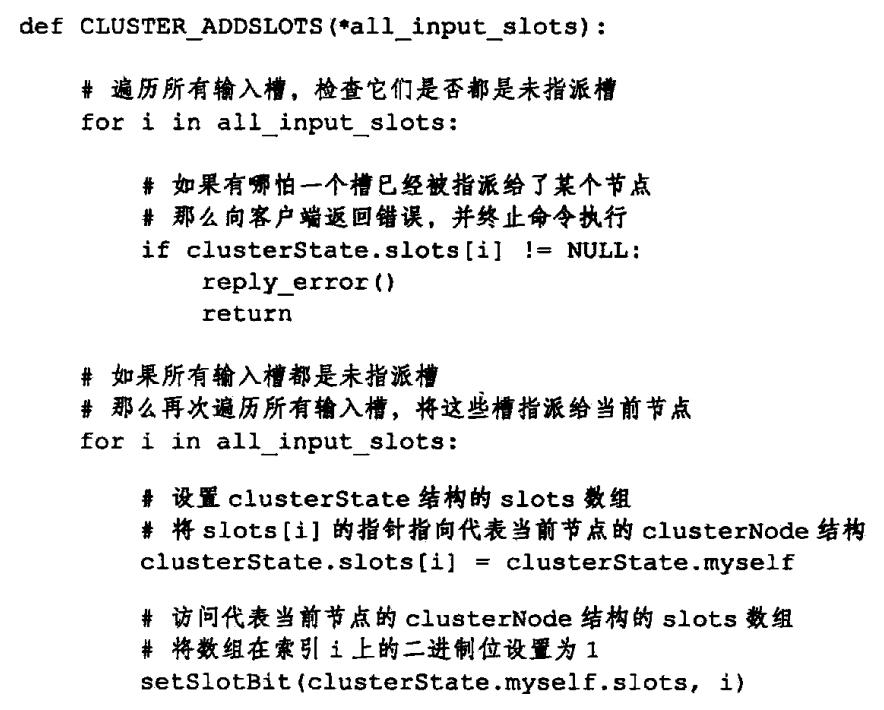
-
具体实例如下：
- 下图展示了一个节点的
clusterState结构，clusterState.slots数组中的所有指针都指向NULL，并且clusterState.slots数组中的所有二进制位的值都是 0，这说明当前节点没有被指派任何槽，并且集群中的所有槽都是未指派的：
 2. 当客户端对上图所示的节点执行
2. 当客户端对上图所示的节点执行 CLUSTER ADDSLOT 1 2，将槽 1 和槽 2 指派给节点之后，节点的clusterState结构将被更新成下图所示的样子：-
clusterState.slots数组在索引 1 和索引 2 上的指针指向了代表当前节点的clusterNode结构。 -
并且
clusterNode.slots数组在索引 1 和索引 2 上的位被设置成了 1。
-
最后，在
CLUSTER ADDSLOTS命令执行完毕之后，节点会通过发送消息告知集群中的其他节点，自己目前正在负责处理哪些槽。
- 下图展示了一个节点的
3 在集群中执行命令 #
- 在对数据库中的 16384 个槽都进行了指派之后，集群就会进入上线状态，这时客户端就可以向集群中的节点发送数据命令了。
- 当客户端向节点发送与数据库键有关的命令时，接收命令的节点会计算出命令要处理的数据库键属于哪个槽，并检查这个槽是否指派给了自己：
-
如果键所在的槽正好就指派给了当前节点，那么节点直接执行这个命令。
-
如果键所在的槽并没有指派给当前节点，那么节点会向客户端返回一个
MOVED错误，指引客户端转向至正确的节点，并再次发送之前想要执行的命令。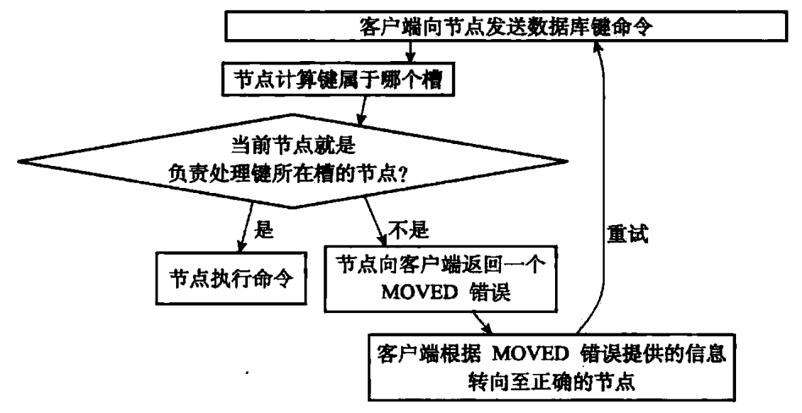
-
- 具体实例如下：
-
我们在之前提到的，由 7000、7001、7002 三个节点组成的集群中，用客户端连上节点 7000，并发送以下命令，那么命令会直接被节点 7000 执行：
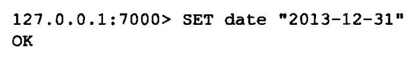
-
因为键
date所在的槽 2022 正是由节点 7000 负责处理的，但是，如果我们执行以下命令，那么客户端会被转向至节点 7001，然后再执行命令：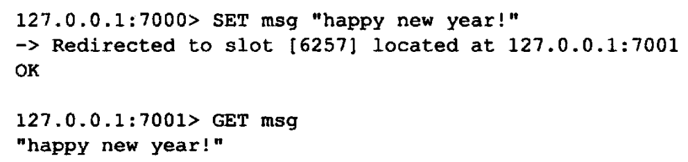
-
因为键
msg所在的槽6257是由节点 7001 负责处理的，而不是由最初接收命令的节点 7000 负责处理：- 当客户端第一次向节点 7000 发送
SET命令的时候，节点 7000 会向客户端返回MOVED错误，指引客户端转向节点 7001。 - 当客户端转向节点 7001 之后，客户端重新向节点 7001 发送
SET命令，这个命令会被节点 7001 成功执行。
- 当客户端第一次向节点 7000 发送
-
3.1 计算键属于哪个槽 #
-
节点使用以下算法来计算给定键
key属于哪个槽：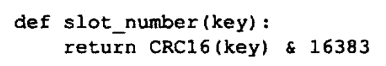
其中
CRC16(key)语句用于计算键key的CRC-16校验和，而& 16383语句则用于计算出一个介于 0 至 16383 之间的整数作为键key的槽号。 -
使用
CLUSTER KEYSLOT <key>命令可以查看一个给定键属于哪个槽：
-
CLUSTER KEYSLOT命令就是通过调用上面给出的槽分配算法来实现的，以下是该命令的伪代码实现：
3.2 判断槽是否由当前节点负责处理 #
- 当节点计算出键所属的槽
i之后，节点就会检查自己在clusterState.slots数组中的项i，判断键所属的槽是否由自己负责：- 如果
clusterState.slots[i]等于clusterState.myself，那么说明槽i由当前节点负责，节点可以执行客户端发送的命令。 - 如果
clusterState.slots[i]不等于clusterState.myself，那么说明槽i并非由当前节点负责，节点会根据clusterState.slots[i]指向的clusterNode结构所记录的节点 IP 和端口号，向客户端返回MOVED错误，指引客户端转向正在处理槽i的节点。
- 如果
- 具体实例如下：
- 假设下图为节点 7000 的
clusterState结构：-
当客户端向节点 7000 发送命令
SET date "2013-12-31"的时候，节点首先计算出键date属于槽 2022，然后检查得出clusterState.slots[2022]等于clusterState.myself，这说明槽 2022 正是由节点 7000 负责，于是节点 7000 直接执行这个SET命令，并将结果返回给发送命令的客户端。 -
当客户端向节点 7000 发送命令
SET msg "happy new year"的时候，节点首先计算出键msg属于槽 6257，然后检查clusterState.slots[6257]是否等于clusterState.myself，结果发现两者并不相等，这说明槽 6257 并非由节点 7000 负责处理，于是节点 7000 访问clusterState.slots[6257]所指向的clusterNode结构，并根据结构中记录的 IP 地址127.0.0.1和端口号 7001，向客户端返回错误MOVED 6257 127.0.0.1:70001，指引节点转向正在负责处理槽 6257 的节点 7001。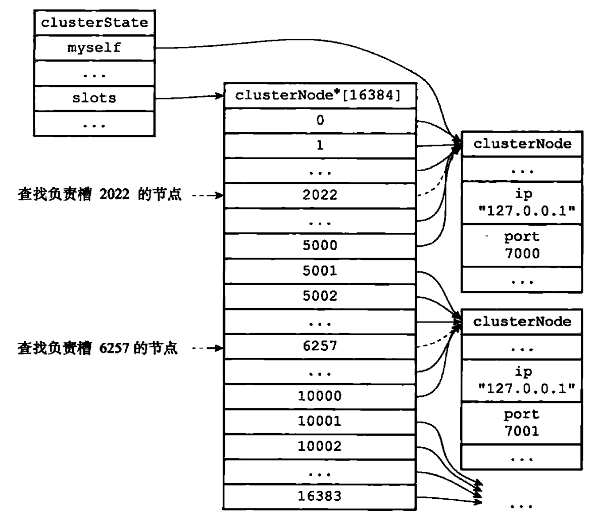
-
- 假设下图为节点 7000 的
3.3 MOVED 错误 #
-
当节点发现键所在的槽并非由自己负责处理的时候，节点就会向客户端返回一个
MOVED错误，指引客户端转向正在负责槽的节点。 -
当客户端接收到节点返回的
MOVED错误时，客户端会根据MOVED错误中提供的 IP 地址和端口号，转向至负责处理槽slot的节点，并向该节点重新发送之前想要执行的命令。 -
一个集群客户端通常会与集群中的多个节点创建套接字连接，而所谓的套接字转向实际上就是换一个套接字来发送命令。
-
如果客户端尚未与想要转向的节点创建套接字连接，那么客户端会先根据
MOVED错误提供的 IP 地址和端口号来连接节点，然后再进行转向。 -
具体实例如下：
-
MOVED错误的格式如下：MOVED <slot> <ip>:<port>其中
slot为键所在的槽，而ip和port则是负责处理槽slot的节点的 IP 地址和端口号，例如：MOVED 10086 127.0.0.1:7002表示槽 10086 正由 IP 地址为 127.0.0.1，端口号为 7002 的节点负责。
-
以客户端从节点 7000 转向至 7001 的情况作为例子：

下图展示了客户端向节点 7000 发送
SET命令，并获得MOVED错误的过程：
下图则展示了客户端根据
MOVED错误，转向至节点 7001，并重新发送SET命令的过程：
需要注意的是：
-
被隐藏的
MOVED错误：-
集群模式的
redis-cli客户端在接收到MOVED错误时，并不会打印出MOVED错误，而是根据MOVED错误自动进行节点转向，并打印出转向信息，所以我们是看不见节点返回的MOVED错误的：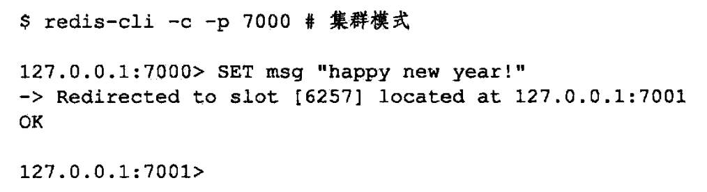
-
但是，如果我们使用单机模式的
redis-cli客户端，再次向节点 7000 发送相同的命令，那么 错误就会被客户端打印出来：
这是因为单机模式的
redis-cli客户端不清楚MOVED错误的作用，所以他只会直接将MOVED错误直接打印出来，而不会进行自动转向。
-
-
-
4 重新分片 #
4.1 含义 #
- Redis 集群的重新分片操作可以将任意数量已经指派给某个节点的槽改为指派给另一个节点，并且相关槽所属的键值对也会从源节点被移动到目标节点。
- 重新分片操作可以在线进行，在重新分片的过程中，集群不需要下线，并且源节点和目标节点都可以继续处理命令请求。
- 具体实例如下：
-
对于之前提到的包含 7000、7001、7002 三个节点的集群来说，我们可以向这个集群添加一个 IP 为 127.0.0.1，端口号为 7003 的节点：
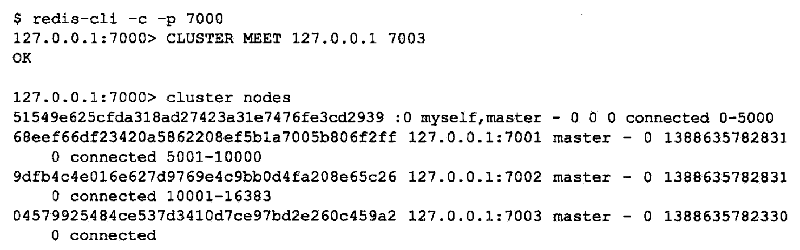
-
然后通过重新分片操作，将原本指派给节点 7002 的槽 15001 至 16383 改为指派给节点 7003，以下是重新分片操作执行之后，节点的槽分配状态：

-
4.2 实现原理 #
- Redis 集群的重新分片操作是由 Redis 的集群管理软件
redis-trib负责执行的，Redis 提供了进行重新分片所需的所有命令，而redis-trib则通过向源节点和目标节点发送命令来进行重新分片操作。 redis-trib对集群的单个槽slot进行重新分片的步骤如下：-
redis-trib对目标节点发送CLUSTER SETSLOT <slot> IMPORTING <source_id>命令，让目标节点准备好从源节点导入属于slot的键值对。 -
redis-trib对源节点发送CLUSTER SETSLOT <slot> MIGRATING <target_id>命令，让源节点准备好将属于槽slot的键值对迁移至目标节点。 -
redis-trib向源节点发送CLUSTER GETKEYSINSLOT <slot> <count>命令，获得最多count个属于槽slot的键值对的键名。 -
对于步骤 3 获得的每个键名，
redis-trib都会向源节点发送一个MIGRATE <target_ip> <target_port> <key_name> 0 <time_out>命令，将被选中的键原子地从源节点迁移至目标节点。 -
重复执行步骤 3 和步骤 4，直到源节点保存的所有属于槽
slot的键值对都被迁移至目标节点为止，每次迁移键的过程如下图所示：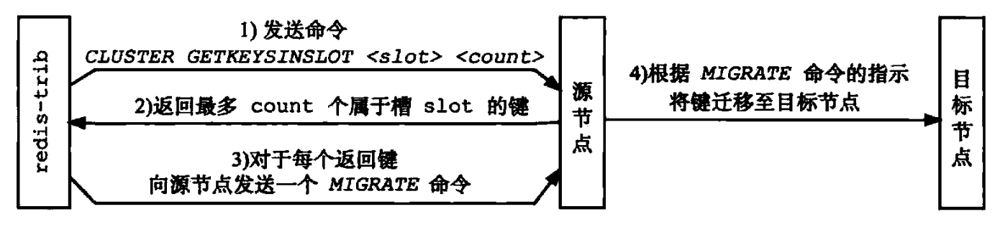
-
redis-trib向集群中的任意一个节点发送CLUSTER SETSLOT <slot> NODE <target_id>命令，将槽slot指派给了目标节点。 -
如果重新分片涉及多个槽，那么
redis-trib将对每个给定的槽分别执行上面给出的步骤。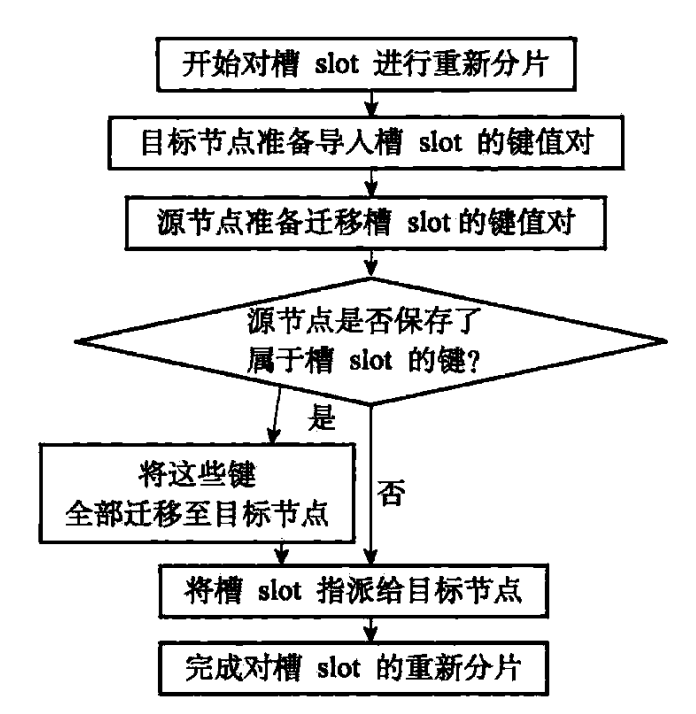
-
5 ASK 错误 #
-
在进行 重新分片期间，源节点向目标节点迁移一个槽的过程中，可能会出现这样一种情况，属于被迁移槽的一部分键值对保存在源节点里面，而另一部分键值对则保存在目标节点里面。
-
当客户端向源节点发送一个与数据库键有关的命令时，并且命令要处理的数据库键恰好就属于正在被迁移的槽时：
-
源节点会先在自己的数据库里面查找指定的键，如果找到的话，就直接执行客户端发送的命令。
-
相反地，如果源节点没能在自己的数据库里面找到指定的键，那么这个键有可能已经被前移到了目标节点，源节点将向客户端发送一个 ASK 错误，指引客户端转向正在导入槽的目标节点，并再次发送想要执行的命令。
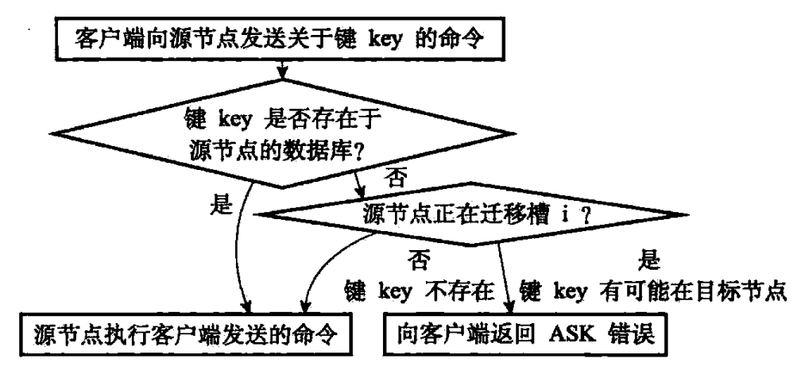
-
-
具体实例如下：
-
假设节点 7002 正在向节点 7003 迁移槽 16198，这个槽包含
is和love两个键，其中键is还留在节点 7002，而键love已经被迁移到了节点 7003。 -
如果我们向节点发送关于键
is的命令，那么这个命令会直接被节点 7002 执行：
-
而如果我们向节点 7002 发送关于键
love的命令，那么客户端会先被转向至节点 7003，然后再次执行命令：
需要注意的是：
- 被隐藏的
ASK错误：-
和接到
MOVED错误时的情况类似，集群模式的redis-cli在接到ASK错误时也不会打印错误，而是自动根据错误提供的 IP 地址和端口进行转向动作，如果想看到节点发送的ASK错误的话，可以使用单机模式的redis-cli客户端：
-
ASK错误和MOVED错误的区别：ASK错误和MOVED错误都会导致客户端转向，他们的区别在于：MOVED错误代表槽的负债权已经从一个节点转移到了另一个节点，在客户端收到关于槽i的MOVED错误之后，客户端每次遇到关于槽i的命令请求时，都可以直接将命令请求发送至MOVED错误所指向的节点，因为该节点就是目前负责槽i的节点。- 与此相反，
ASK错误只是两个节点在迁移槽的过程中使用的一种临时措施，在客户端收到关于槽i的ASK错误之后，客户端只会在接下来的一次命令请求中将关于槽i的命令请求发送至ASK错误指示的节点，但这种转向不会对客户端今后发送关于槽i的命令请求产生任何影响，客户端仍然会将关于槽i的命令请求发送至目前负责处理槽i的节点，除非ASK错误再次出现。
- 被隐藏的
-
6 复制与故障转移 #
- Redis 集群中的节点分为主节点和从节点，其中主节点用于处理槽，而从节点则用于复制某个主节点，并在被复制的主节点下线时，代替下线主节点继续处理命令请求。
- 具体实例如下：
-
例如，对于包含 7000、7001、7002、7003 四个主节点的集群来说，我们可以将 7004、7005 两个节点添加到集群里面，并将这两个节点设定为节点 7000 的从节点，如下图所示，其中双圆形表示主节点，单圆形表示从节点：
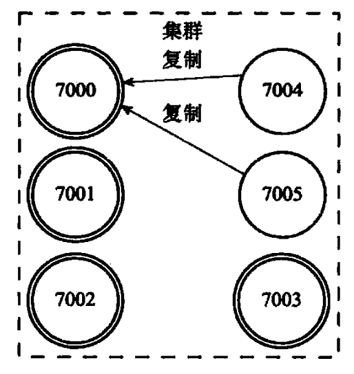
-
下表记录了集群各个节点的当前状态，以及他们正在做的工作：
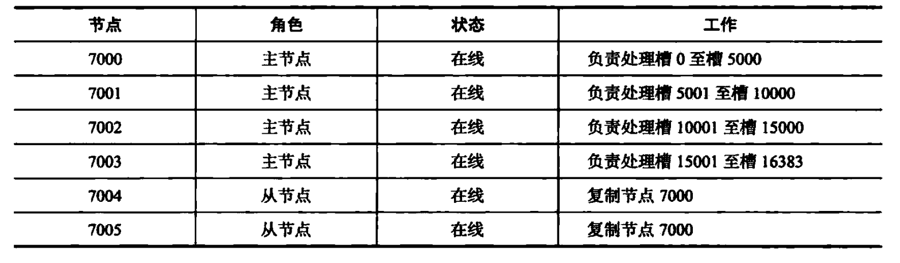
-
如果这时节点 7000 进入下线状态，那么集群中仍在正常运作的几个主节点将在节点 7000 的两个从节点（节点 7004 和节点 7005）中选出一个节点作为新的主节点，这个新的主节点将接管原来节点 7000 负责处理的槽，并继续处理客户端发送的命令请求。
-
例如，如果节点 7004 被选中为新的主节点，那么节点 7004 将接管原来由节点 7000 负责处理的槽 0 至槽 5000，节点 7005 也会从原来的复制节点 7000，改为复制节点 7004，如下图所示，其中用虚线包围的节点为已下线节点：

-
下表记录了在对节点 7000 进行故障转移之后，集群各个节点的当前状态，以及他们正在做的工作：
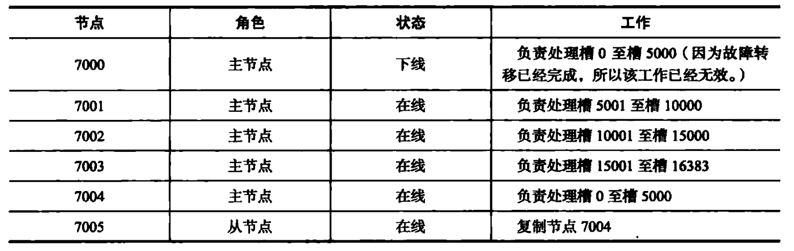
-
如果在故障转移完成之后，下线的节点 7000 重新上线，那么他将成为节点 7004 的从节点，如下图所示：
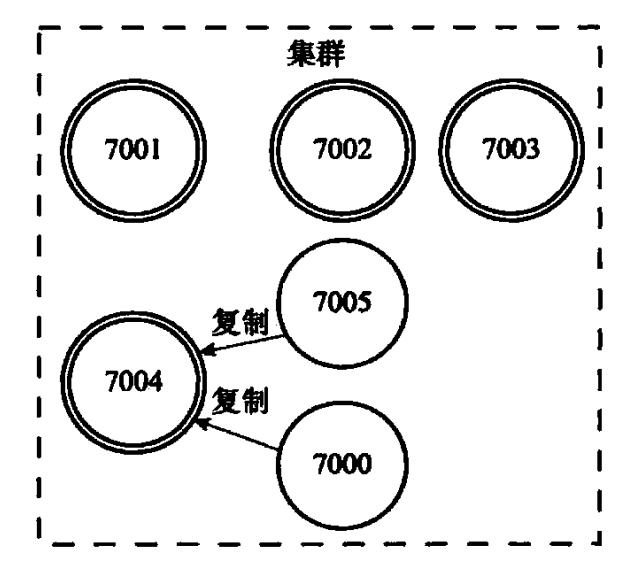
-
下表展示了节点 7000 复制节点 7004 之后，集群中各个节点的状态：
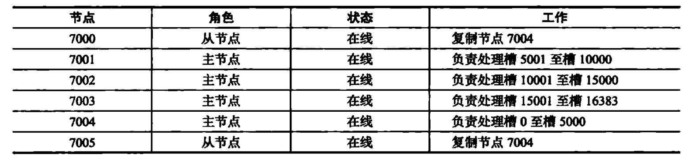
-
6.1 设置从节点 #
- 向一个节点发送
CLUSTER REPLICATE <node_id>，可以让接收命令的节点成为node_id所指定节点的从节点，并开始对主节点进行复制：-
接收到该命令的节点首先会在自己的
clusterState.nodes字典中找到node_id所对应节点的clusterNode结构，并将自己的clusterState.myself.slaveof指针指向这个结构，以此来记录这个节点正在复制的主节点。typedef struct clusterNode { // ... // 如果这是一个从节点，那么指向主节点 struct clusterNode *slaveof; // ... } clusterNode; -
然后节点会修改自己在
clusterState.myself.flags中的属性，关闭原本的REDIS_NODE_MASTER标识，打开REDIS_NODE_SLAVE标识，表示这个节点已经由原来的主节点变成了从节点。 -
最后，节点会调用复制代码，并根据
clusterState.myself.slaveof指向的clusterNode结构所保存的 IP 地址和端口号，对主节点进行复制，因为节点的复制功能和单机 Redis 服务器的复制功能使用了相同的代码，所以让从节点复制主节点相当于向从节点发送命令SLAVEOF <master_ip> <master_port>。 -
一个节点成为从节点，并开始复制某个主节点这一信息会通过消息发送给集群中的其他节点，最终集群中的所有节点都会知道某个从节点正在复制某个主节点。
-
集群中的所有节点都会在代表主节点的
clusterNode结构的slaves属性和numslaves属性中记录正在复制这个主节点的从节点的名单。typedef struct clusterNode { // ... // 正在复制这个主节点的从节点数量 int numslaves; // 一个数组，每个数组项指向一个正在复制这个主节点的从节点的 clusterNode 结构 struct clusterNode **slaves; // ... } clusterNode; -
具体实例如下：
- 下图展示了节点 7004 在复制节点 7000 时的
clusterState结构：-
clusterState.myself.flags属性的值为REDIS_NODE_SLAVE，表示节点 7004 是一个从节点。 -
clusterState.myself.slaveof指针指向代表结点 7000 的结构，表示节点 7004 正在复制的主节点为节点 7000。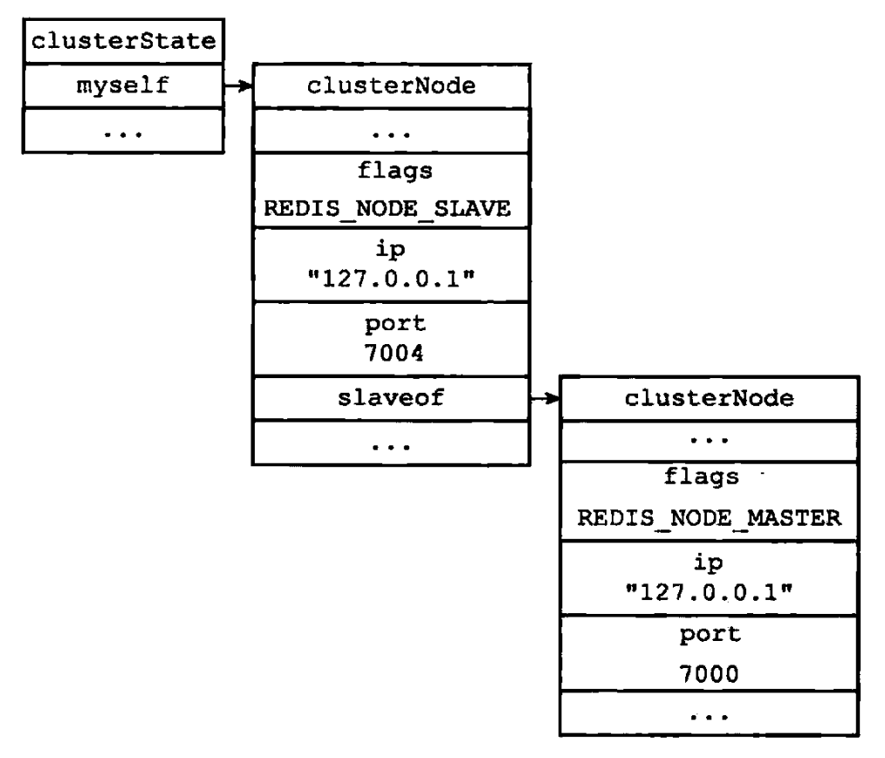
-
- 下图记录了节点 7004 和节点 7005 成为节点 7000 的从节点之后，集群中的各个节点为节点 7000 创建的
clusterNode结构的样子：-
代表节点 7000 的
clusterNode结构的numslaves属性的值为 2，这说明有两个从节点正在复制节点 7000。 -
代表节点 7000 的
clusterNode结构的slaves数组的两个项分别指向代表节点 7004 和代表节点 7005 的clusterNode结构，这说明节点 7000 的两个从节点分别是节点 7004 和节点 7005。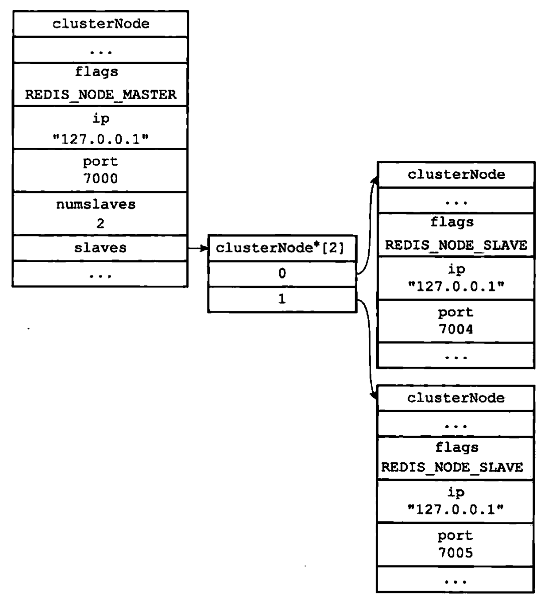
-
- 下图展示了节点 7004 在复制节点 7000 时的
-
6.2 故障检测 #
-
集群中的每个节点都会定期地向集群中的其他节点发送
PING消息，以此来检测对方是否在线，如果接收PING的节点没有在规定的时间内，向发送PING消息的节点返回PONG消息，那么发送PING消息的节点就会将接收PING消息的节点标记为疑似下线（probable fail, PFAIL）。 -
集群中的各个节点会通过互相发送消息的方式来交换集群中各个节点的状态信息，例如某个节点是否处于在线状态、疑似下线状态、还是已下线状态。
-
当一个主节点
A通过消息得知主节点B认为主节点C进入了疑似下线状态，主节点A会在自己的clusterState.nodes字典中找到主节点C所对应的clusterNode结构，并将主节点B的下线报告添加到clusterNode结构的fail_reports链表里面：typedef struct clusterNode { // ... // 一个链表，记录了所有其他节点对该节点的下线报告 list *fail_reports; // ... } clusterNode; -
每个下线报告由一个
clusterNodeFailReport结构表示：typedef struct clusterNodeFailReport { // 报告目标节点已经下线的节点 struct clusterNode *node; // 最后一次从 node 节点收到下线报告的时间，程序使用这个时间戳来检查下线报告是否过期，与当前时间相差太久的下线报告会被删除 mstime_t time; } clusterNodeFailReport; -
如果在一个集群里面，半数以上负责处理槽的主节点都将某个主节点
x报告为疑似下线，那么这个主节点x将被标记为已下线，将主节点x标记为已下线的节点会向集群广播一条关于主节点x的FAIL消息，所有收到这条FAIL消息的节点都会立即将主节点x标记为已下线。 -
具体实例如下：
-
如果主节点 7001 在收到主节点 7002、主节点 7003 发送的消息后得知，主节点 7002 和主节点 7003 都认为主节点 7000 进入了疑似下线状态，那么主节点 7001 将为主节点 7000 创建下图所示的下线报告：

-
对于上图所示的下线报告来说，主节点 7002 和主节点 7003 都认为主节点 7000 进入了下线状态，并且主节点 7001 也认为主节点 7000 进入了疑似下线状态，综合起来，在集群四个负责处理槽的主节点里面，有三个都将主节点 7000 标记为下线，数量已经超过了半数，所以主节点 7001 会将主节点 7000 标记为已下线，并向集群广播一条关于主节点 7000 的
FAIL消息，如下图所示：
-
6.3 故障转移 #
- 当一个从节点发现自己正在复制的主节点进入了下线状态时，从节点将开始对下线主节点进行故障转移，具体步骤如下：
- 复制下线主节点的所有从节点里面，会有一个从节点被选中。
- 被选中的从节点会执行
SLAVEOF no one命令，成为新的主节点。 - 新的主节点会撤销所有对已下线主节点的 槽指派，并将这些槽全部指派给自己。
- 新的主节点向集群广播一条
PONG消息，这条PONG消息可以让集群中的其他节点立即知道这个节点已经由从节点变成了主节点，并且这个主节点已经接管了原本由已下线节点负责处理的槽。 - 新的主节点开始接收和自己负责处理的槽有关的命令请求，故障转移完成。
6.4 选举新的主节点 #
- 新的主节点是通过选举产生的，具体方法如下：
- 集群的配置纪元是一个自增计数器，初始值为0。
- 当集群里的某个节点开始一次故障转移操作时，集群配置纪元的值会被增一。
- 对于每个配置纪元，集群里每个负责处理槽的主节点都有一次投票的机会，而第一个向主节点要求投票的从节点将获得主节点的投票。
- 当从节点发现自己正在复制的主节点进入已下线状态时，从节点会向集群广播一条
CLUSTERMSG_TYPE_FAILOVER_AUTH_REQUEST消息，要求所有收到这条消息、并且具有投票权的主节点向这个从节点投票。 - 如果一个主节点具有投票权，并且这个主节点尚未投票给其他从节点，那么主节点将向要求投票的从节点返回一条
CLUSTERMSG_TYPE_FAILOVER_AUTH_ACK消息，表示这个主节点支持从节点成为新的主节点。 - 每个参与选举的从节点都会接收
CLUSTERMSG_TYPE_FAILOVER_AUTH_ACK消息，并根据自己收到了多少条这种消息来统计自己获得了多少主节点的支持。 - 如果集群里面有$N$个具有投票权的主节点，那么当一个从节点收集到大于等于$\frac{N}{2} + 1$张支持票的从节点只会有一个，这确保了新的主节点只会有一个。
- 如果在一个配置纪元里面没有从节点能收集到足够多的支持票，那么集群进入到一个新的配置纪元，并再次进行选举，直到选出新的主节点为止。
这个选举新主节点的方法和 哨兵模式中的 选举领头哨兵的方法非常相似，因为这两者都是基于Raft算法的领头选举方法来实现的。
参考文献 #
- redis 设计与实现（第二版）。